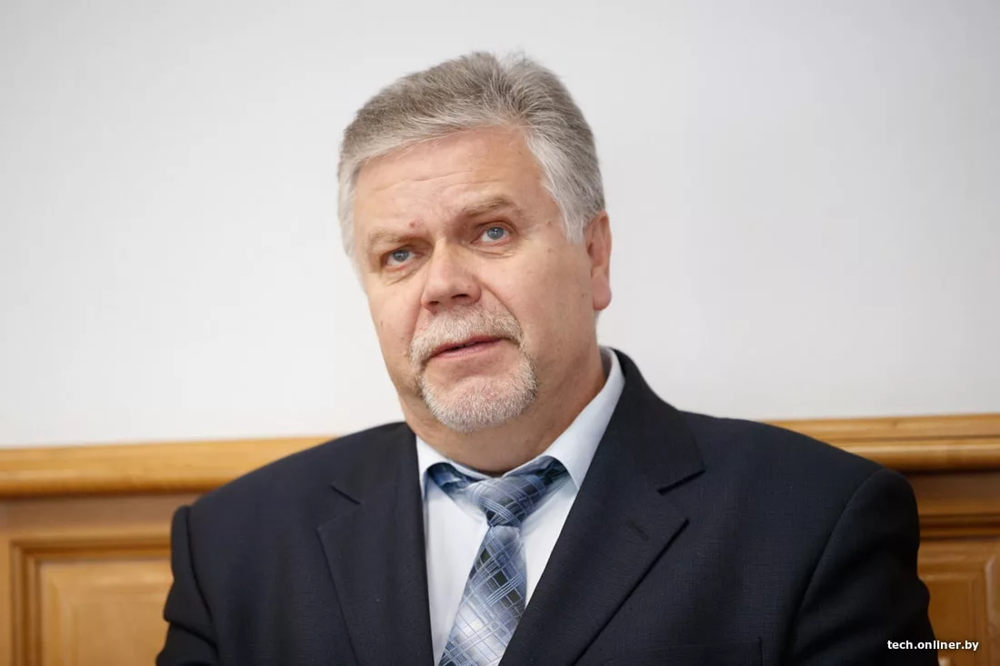
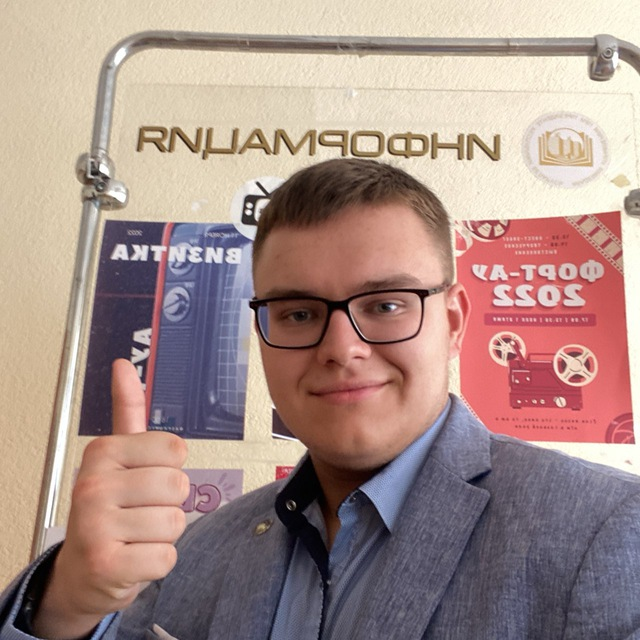
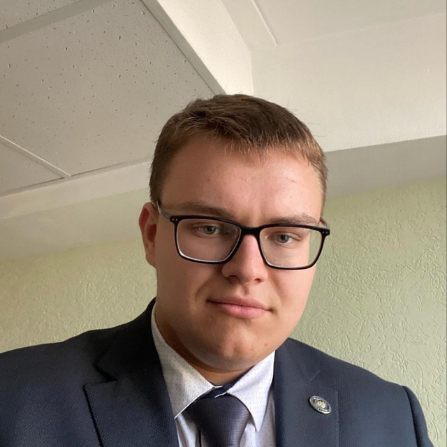
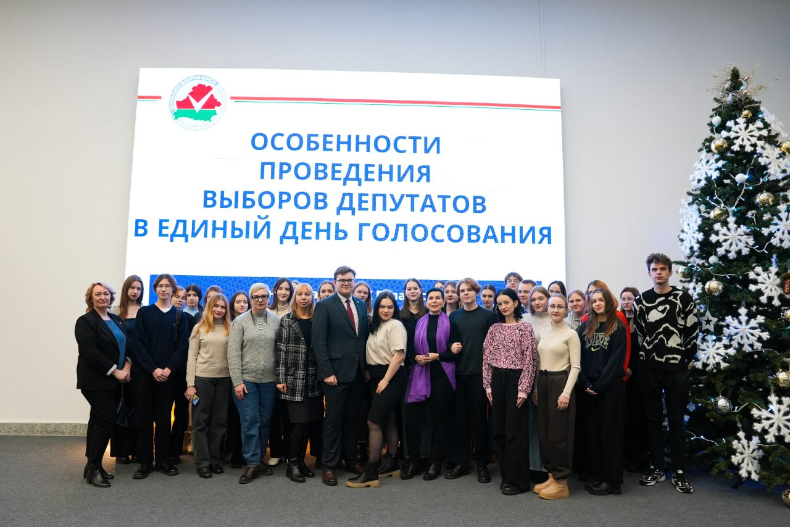

Приветствуем Вас на портале Судника Олега Андреевича!
Биография
Олег Судник родился 27 апреля 2005 года в Минске.
С 2011 по 2022 годы учился в Средней общеобразовательной школе №61, которую закончил с отличием. По данным директора школы №61 Ирины Цубиковой, его средний балл составлял 10.0.
Слева направо: Олег Судник, Матвей Писин, Тимофей Лутович на школьном выпускном
В 2022 году поступил в Институт управленческих кадров Академии управления при Президенте Республики Беларусь. По словам историков, на выбор Судника повлияли известные белорусские учёные и специалисты в области информационных ресурсов и технологий Борис Владимирович Новыш и Ирена Викторовна Гваева.

Борис Новыш и Ирена Гваева
С 10 мая 2023 года - заместитель Председателя Студенческого совета Института управленческих кадров 17 состава. Курирует сектор образовательной, профориентационной и аналитической работы.

Олег Судник на рабочем месте в Студенческом Совете ИУК, 2023 год
5 марта 2024 года выиграл выборы на должность Председателя Совета старост Института управленческих кадров.

Олег Судник, 3-й Председатель Совета старост ИУК (5 марта 2024 - н.вр.)
На сегодняшний день обучается на третьем курсе.
Хобби
С 2011 по 2019 годы Олег Судник занимался в музыкальной школе по классу баяна. Окончил её с отличием в мае 2019 года.
По некоторым данным, занимался написанием песен. Фрагмент текста одной из них:
Не падайте, каштаны,
Прошу я вновь и внось,
Верните мне, каштаны,
Разбитую любовь.
Называет себя фанатом групп Cranberries и "Чёрный обелиск".
На сегодняшний день интересуется наукой и политикой. Сфера интересов - цифровизация избирательного процесса.
Любимое занятие в свободное время - чтение. Любимыми философами считает Сократа и Освальда Шпенглера. Любит белорусскую литературу, но особенно восхищается "писательским гением" Ивана Шамякина и Владимира Короткевича.
Политическая позиция
В политическом спектре относит себя к правым.
Резко негативно относится к однополым бракам и эвтаназии. Выступает за рыночную экономику, однако поддерживает инструмент антимонопольного регулирования.
Cторонник Президента Беларуси Александра Лукашенко. 23 октября 2024 года, после объявления о дате выборов Президента Республики Беларусь, заявил в соцсети Instagram о поддержке Главы белорусского государства на грядущих выборах. Считает белорусского лидера гарантом мира и стабильности:
Аляксандр Рыгоравіч - гарант міру і стабільнасці на беларускай зямлі! Толькі ён здольны гарантаваць баланс сіл у знешняй палітыцы і захаваць мірнае неба над нашай Сінявокай Бацькаўшчынай!
Олег Судник (цитата приведена на языке оригинала)
Положительно характеризует таких современных политиков, как Марин Ле Пен, Дональд Трамп, Найджел Фарадж.
С 2023 года состоит в Белорусской политической партии "Белая Русь". Параллельно, с 10 ноября 2023 года осуществляет полномочия члена Молодёжного совета при Центральной избирательной комиссии Республики Беларусь.

Олег Судник проводит информационно-просветительскую работу в Минском государственном лингвистическом университете.
Считает, что основа воспитания патриотично настроенной молодёжи - грамотная идеологическая и воспитательная работа.
Олег Судник в молодёжной аудитории
Личная жизнь
Доподлинно неизвестно ничего о личной жизни Судника. Сам Олег заявляет, что "личная жизнь ему не грозит".
Олег Судник сейчас
Олег Судник в соцсетях
На сегодняшний день представлен в нескольких социальных сетях и мессенджерах: Телеграм ВК Инстаграм